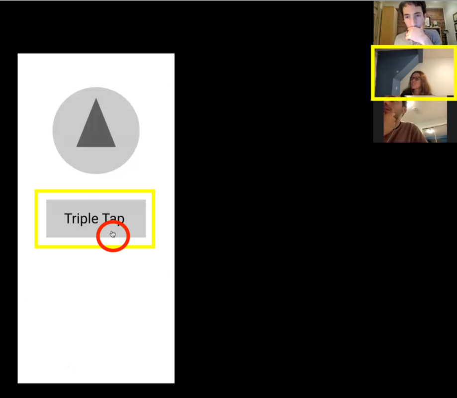

Welcome to ECSE424 HCI Group 13 Notebook
Formative Feedback
I. Testing
Please see the test plan critique section for important context on the provided test plan. In brief, few specific test materials were provided. The team alludes to a pre- and post-test survey, but only a post-test survey is provided. No specific tasks with concrete success metrics are provided, and no datasheet is provided.
In the end, we constructed our own usability test and quantitative success criteria, attempting to adhere to the team’s philosophy as outlined in their last deliverable.
We gathered two users who have experience with navigation apps; both of whom are over eighteen years old as per the specifications of the HapticMaps team. Their consent forms are included below:
Consent Form Paola
Consent Form Soraya
Post test questionaire from Paola
Post test questionaire from Soraya
II. Results and Analysis
User #1
Figure 1: User is adding the address again after it got erased when she changed the transportation mode.

Figure 2: User is slightly hesitant to start navigation after successfully creating a route.
User #2
Figure 3: User pressing the route button before selecting an address. Pop-up message indicating error.

Figure 4: User being immediately drawn to the triple tap button thinking that is the next step after commencing navigation.
The team conducted two usability tests with participants meeting the predetermined criteria: i.e., that they are above 18 years of age, and have some familiarity with navigation systems. The HapticMaps team suggest that the test can be on mobile or desktop, with a strong preference for mobile as this will be the ultimate platform for release.
Opting for desktop deployment. We determined early on that screen-capture would be important for the analysis of test results; at one point (the “navigation phase,” which switches to a “smartwatch” mode) the screen updates fairly quickly, and it was important for us to have direct eyes on the GUI, to have a sense of what the participant was reacting to. It proved difficult to record the screen of a mobile device while using the software prototype platform. Instead we opted to use Zoom on a desktop machine with screen sharing and recording on. Preliminary tests within our evaluation team determined that mobile and desktop behaviour are highly similar with the prototype in its current scope of functionality (i.e., dummy predetermined destination and routing, no haptic feedback or sound implemented).
Results
Subject 1: F, undergraduate student. Frequent user of navigation apps.
| TASK | Usability Goal | Success Condition | Measurement | Comments |
|---|---|---|---|
| Task 1a. Choose a mode of transportation. Users should be able to choose which mode of transport they will be taking. |
This action should be completed in at most 10 seconds. Note the time taken for the user to complete the task. | 23 seconds to completion. Failed. | User clicks on the wrong field (“Start navigation.”) It is unclear to the user that “mode of navigation” is the first thing to be determined. User had to go back to the manual. Quote, “Yeah I had to go back to the manual because it highlighted everything, it didn’t highlight the thing I was trying to interact with.” Note: Could use a panel or highlight to indicate to the user what the first step is; perhaps a timer if it takes them too long to initiate navigation. |
| Task 1b. Enter a destination address. Users should be able to enter their destination address and then be able to route their journey. |
Users should be able to identify the destination text field and begin entering their destination within 5 seconds. If they are unable to do so, consider the task failed. Note the time taken for the user to complete the task. | 7 seconds. Failed. | Some confusion with the prototype keyboard: “Do I have to enter it again?”. Note: The prototype here has a simple display to indicate that the user should click, and this will stand in for a given address. I think this is the best way to address this functionality in a low-fi computer prototype. It is safe to assume that most users know how to use a mobile keyboard. |
| Task 1c. Create a route. | Should be done in 10 seconds. | 13 seconds. Failed. | User goes immediately to the “START NAVIGATION” button, without clicking the “ROUTE” button in the upper right corner of the screen. Note: I am reminded of Buxton’s idea of compound gesture, specifically “tension.” In this case, the user starts at the top of the screen (TRANSIT), then moves down to enter the address. It is only natural that their eye would continue down to the next button, which says “START NAVIGATION.” Instead, they have to go out of their way to click the ROUTE button. I suggest that the design team remove this button completely, or move it to a new location. |
| Task 1d. Start navigation. | Should be done in 5 seconds. | 2 seconds. Success. | The “START NAVIGATION'' button is clearly placed at the bottom of the screen, and being against a boundary, it has effectively infinite width, meaning that the time to reach it should be quite low according to Fitts law. |
| Task 2. End trip. Users are able to end the trip at any point during their travel. |
Users should be able to end the trip within 2 attempts (gestures). If they are unable to end the trip consider the task failed. Note the number of attempts in total that it takes for the user to terminate the trip. | Multiple attempts (>10) without stopping. Failed. | Participant struggles with this, "How do I end it early? I thought it was triple tapping." Note: Although it is understood that we have switched at this point to a smart-watch interface, the GUI could still benefit from some kind of interactable object, some button that affords control (for example, a play/pause button). Even though the user can see the literal directive to “tap on the screen,” it is not clear where to do this. And then they tap once, or twice, there is no feedback to indicate that the device has or has not heard their actions. |
| Task 3. Start the trip again. | Should be done in 5 seconds. | N/A | User was unable to restart the trip, because they were unable to stop it. We restarted the trip and had the user move on to the next task. |
| Task 4. Follow the directions until the end. User is able to accurately follow the directions on the device to get to their destination. |
Users should be able to follow all directional arrows. If they are unable to follow any of the arrows correctly, consider the task failed. Note the number of times users move in the wrong direction or are hesitant to follow the arrow. | No ambiguity. "I'm going forward, then right then go straight, then make a left. And now I've arrived." Success. | No comments in particular. This was a natural and successful task for the user to follow. User comment: “That was really fast.” Note: I suspect this will be more worth pursuing in the alpha prototype. |
| User is able to associate the various vibrations with the different directional commands. | Users should be able to correctly relate all haptics to directions. If they are unable to do so within two attempts (per haptic shown) then consider the task failed. Record the type of haptic and how many attempts taken to correctly associate it to a direction. | User: “Am I supposed to feel the vibration part that it mentions in the manual”? It is unclear how to test this, and this caused some confusion with the participant as well. |
Subject 2: F, middle-aged. Occasional user of navigation apps. Non native English speaker.
| TASK | Usability Goal | Success Condition | Measurement | Comments |
|---|---|---|---|
| Task 1a. Choose a mode of transportation. Users should be able to choose which mode of transport they will be taking. |
This action should be completed in at most 10 seconds. Note the time taken for the user to complete the task. | 25 seconds to completion. Failed. | "I don’t see Transit, can you help me?" At this point, the user had to check the user manual.After choosing "transit," the user has to go back to the manual again. Note: We suggest that there is a strong visual cue to indicate to the user where to begin the navigation experience. |
| Task 1b. Enter a destination address. Users should be able to enter their destination address and then be able to route their journey. |
Users should be able to identify the destination text field and begin entering their destination within 5 seconds. If they are unable to do so, consider the task failed. Note the time taken for the user to complete the task. | 20 seconds to completion. Failed. | Had to look back at the manual. Believes that the next step is the “ROUTE” button; did not go to adding address without instruction. Like the previous participant, this user was confused with the predefined address setting; i.e., the semi-functionality of the prototype. |
| Task 1c. Create a route. | Should be done in 10 seconds. | 30 seconds. Failed. | "What should I do? Start?" -- User had to check the back user manual, and was unsure what button to press. Note: Because the user manual outlines this use-case in a very specific, enumerated way, it was easy at this point for the user to figure out the next step. However, a more flexible user manual should likely be more modular in nature. Therefore we suggest that the APP itself helps to guide the user to the next appropriate step, rather than assuming they have the manual in hand. Most mobile apps do not have user manuals regardless. |
| Task 1d. Start navigation. | Should be done in 5 seconds. | 5 seconds. Success. | Because the START NAVIGATION button is so clearly displayed and nicely placed (see previous comment about Fitts law), this task was not an issue for either participant. |
| Task 2. End trip. Users are able to end the trip at any point during their travel. |
Users should be able to end the trip within 2 attempts (gestures). If they are unable to end the trip consider the task failed. Note the number of attempts in total that it takes for the user to terminate the trip. | 1 attempt. Success. | User went straight to the triple tap button. Note: This cuts an interesting contrast to the previous participant. |
| Task 3. Start the trip again. | Should be done in 5 seconds. | 5 seconds. Success. | Having performed this task once, it was simple for the participant to recall and perform the task again. |
| Task 4. Follow the directions until the end. User is able to accurately follow the directions on the device to get to their destination. |
Users should be able to follow all directional arrows. If they are unable to follow any of the arrows correctly, consider the task failed. Note the number of times users move in the wrong direction or are hesitant to follow the arrow. | User followed instructions with some difficulty. See comments for details. Failed. | Identified the arrow pointing north, but did not see the arrival marker. Users had some confusion about the role of the “stop” icon. Users also mistakenly triple-taps the device, believing this to be a part of the navigation experience. |
| User is able to associate the various vibrations with the different directional commands. | Users should be able to correctly relate all haptics to directions. If they are unable to do so within two attempts (per haptic shown) then consider the task failed. Record the type of haptic and how many attempts taken to correctly associate it to a direction. | N/A | Users did not seem to know that haptics was a component of this device; and therefore this caused little confusion in the experiment. |
Similarities and Differences Between Subjects
We had an interesting juxtaposition of subjects: both fall nicely into the desired subject pool, and have varying degrees of experience with navigation technology. When it comes to user issues, as Nielson suggests, we had a very meaningful combination of overlap, and novel problems illuminated from either perspective.
Commonalities.
- Both users had trouble beginning the navigation process. Both failed our 10-seconds-to-initiate benchmark, and both had to look to the user manual to determine how to begin (i.e., by going to the menu to select their form of transportation).
- Both users had confusion about the scope of the functionality of the prototype, including whether it should vibrate, and when and how it was referring to a smart-watch display rather than a phone display. “Does it actually vibrate?” “Should I enter an actual address on the keyboard?” This could have been appropriately addressed with a pre-test briefing.
- Both users skipped the “ROUTE” button (i.e., generate a route), and went immediately to the “START NAVIGATION” button.
- When it came time to press the START NAVIGATE button, both users found it very quickly. This is a success of the platform, and may be explained by Fitt’s law (being at the lower edge of the system, the button has effectively infinite width and therefore can be navigated to quickly).
- While the navigation directions/icons were differentially self-evident to either user, both expressed a feeling of lack of control during the “navigation” section. “It moves so fast!”
- Neither user, nor the experimenters, were able to restart the system after completing a navigation. The GUI freezes on the “stop” icon.
Differences
- Participant 2 took the directive of “triple tap to stop navigation” as a request to “triple tap,” regardless of wanting to stop or not. This confusion was not an issue for participant one.
- Participant 1 had little trouble interpreting the directional icons, “I go left, I go right; I’ve arrived.” It was not clear to participant 2 when the navigation phase had ended; the stop icon was not a clear indicator.
- Participants had varying levels of awareness of the haptic component of the device, despite the fact that both read the user manual. Participant 1 was aware of the missing haptic component, but expressed that the latter half of the manual was “confusing.” Participant 2 did not express any confusion or expectation for haptic feedback.
1. User does not know where to begin, where to go next (high).
Relevant heuristic: Help and documentation. Both users failed the first part of the first task, which was to find and select a mode of transit within a limited period of time. Both users had to go to the manual to figure out what the “first move” was. Though it is clear from the start that there are many possibly interactable elements in the GUI, there is no clear “start here”. An application should have an obvious entry point for the user, or they will not have the opportunity to move onto the rest of the functionality of the application. Therefore we consider this to be a high priority issue.
2. System cannot restart after navigation (high).
Relevant heuristics: user control and freedom; help user recover from error. Both users, and the experimenters, were unable to restart the application to initiate a second navigation. While this may be a simple oversight for the prototype implementation, it still gives the user a considerable sense of frustration and lack of control. It is also conceivable that a user would navigate to the wrong location, by their own mistake, and need to rapidly change course after arriving. This therefore prevents a user from recovering from an error. For these reasons we consider this problem to be high priority as well.
3. Route button is consistently missed (med). Relevant concept: Buxton’s compound gesture, tension and closure. Both users skipped the “ROUTE” button, which is responsible for building and displaying the proposed route before the user initiates navigation. We see this is a simple consequence of compound gesture, as explained by the following: consider the act of initiating navigating as one long compound gesture. This gesture sees the user going from the top to the bottom of the screen: (1) choose a navigation type, (2) enter an address … (4) start navigation. Starting navigation contributes the “closure” to the tension that is built up as the user moves down the GUI. However, the route button is located far out of the way in the top right corner of the app, which violates this gesture. We consider this to be a mild annoyance, and therefore a medium priority issue.
4. Haptic feedback system, which is central to product performance, remains unevaluated (med). Relevant heuristic: Match between system and real world (unnatural mapping). This is a mild consideration for this prototype, though we mention it here because haptics are clearly important to how this app will ultimately be used. Given the description of the haptic icons provided in the user manual, we fear that there may be an unnatural mapping between haptics and real world directives. That said, being unable to experience this we are unable to comment in much confidence at this moment in time. Therefore this is a medium priority issue.
5. User feels a lack of control during navigation (low). Relevant heuristic: User control and freedom. This issue may be a direct consequence of low fidelity prototyping, however both users expressed a lack of control during the “navigation” section of the prototype. This lack of control leads to a feeling of discomfort that is best avoided in future iterations of the project. In all likelihood, this problem will be mitigated by the use implementation of a more fully functional device, and therefore we consider this to be a low priority issue.
III. Test Plan Critique
In this section, we critique the provided test plan.
Vagueness, and few specific tasks. Broadly speaking, the usability test plan provided by this team is vague; it consists largely of general aphorisms, best practices for testing any device in general, but not much that is specific to this product. For example, “the examiners should make sure to treat subjects courteously and thank them for their time,” and “be sure to record anything the subject tells you during or after navigating.” This is useful information, but not in a vacuum of other, product-specific directives. It can be safely assumed that any expert evaluator would be coming to the task with this information already in mind.
Furthermore, specific tasks to be carried out by the evaluator are not explicitly outlined, and when they are suggested, they are again rather vague. For example, “the observers should measure how accurately the users follow directions provided by the software and hardware.” The team provides no specific metrics to this end (and no specific tasks). Elsewhere the team states, “it may not be possible to record a comprehensive set of data during the test itself.”
Lack of adequate functionality for proposed tests. In other cases, usability questions are addressed at a functionality that is not yet implemented in the prototype, which makes it confusing to test even with “Wizard of Oz”ing. For example, the usability goal “user is able to accurately follow the directions on the device to get to their destination.” This is not possible to test on the prototype as provided, and there were no approximate tasks suggested for evaluation purposes. In the end we corrected this with our own task suggestions, see below. Another similar goal is “user is able to associate the various vibrations with the different directional commands.” There are no haptics implemented in the prototype. Finally, the user is meant to understand, through the user manual, that the prototype switches to a “watch display view,” for navigation purposes. This was not clear to either participants, though they were instructed to read the manual, and lead to confusion.
Mistaken use of heuristics as “usability evaluation.” The team provides a generous “usability evaluation” section in which they step through Norman’s heuristics, and provide a series of bullet points of goals for the system: e.g., “Users should always know when the system is in operation or not,” “Avoiding large, robust systems with numerous buttons is important to us, they simplify user interactions...” These are all useful points to keep in mind, however, rarely does the team translate these ideals into a specific task to be carried out in evaluation, and when they do it is often in passing, with no specific reference to test metrics, what constitutes a “success” or “failure.”
Developing our own metrics. As a result, we had to develop our own series of tasks that attempted to address these goals. In the case of direction accuracy, we asked the participants to describe, as closely as possible, what they would be doing while walking around and using this device, based on its feedback. From here we were able to glean some qualitative observations, but a particular choice of quantitative measurement would have been preferred.
Missing testing materials. The test materials mention a pre- and post-test survey, however no pre-test survey was provided. This survey link led to a google form that we did not have internal access to; so we had to copy the questions and take down the responses by hand. The team also provided no datasheet, which is understandable, because as mentioned earlier there were no specific tasks to carry out.
Suggested improvements. Our team developed a series of tasks and quantitative metrics that attempt to make concrete the work of the HapticMaps team. The new test is a simple, four task test; the datasheet, which we created ourselves, allows the evaluator to mark down the time taken for a task to be completed, and has a suggested pass/fail metric based on a suggested time (we are, however, just guessing here). The table also leaves a spot for comments, and to copy down participant quotes.
We suggest the following tasks and criteria:
-
Initiate navigation by transit.
- Duration to choose a mode of transportation? Should be 10 seconds.
- Duration to enter destination address? Should be 5 seconds.
- Create a route. Should be 10 seconds.
- Start navigation. Should be 5 seconds.
- End the trip early.
- Trip should end within two attempts (gestures). Note the number of attempts.
-
Start the trip again as a cyclist.
- Should take 5 seconds, having gone through this cycle once already.
-
Follow the directions until the end, and be sure to comment out loud what your actions would be.
- Users should demonstrate a clear understanding of the icons on screen: left arrow means go left, stop icon means stop, etc. (We had a participant who did not understand the significance of the stop sign, for example).
Language in the post-test survey. Further to this, we expanded on the suggested post-test survey by conducting it orally, and providing guiding, explanatory language. The question, “rank how well you felt the status of the system was communicated”: is clearly aimed at the Norman heuristic “visibility of system status.” However, this phraseology was confusing to both subjects, who did not know what the question was referring to. To quote one participant, “The status, being? ...What I was doing at a given time? ...The direction in which I was going?” We took pains to explain what “system status” was meant to be, to the best of our abilities, without an intimate understanding of the system.
We would suggest instead more specific questions to target Norman heuristics, ones that are more “metabolized” to fit the specifics of your product. You can’t expect the average user to know what system status means. For example, you might ask “Was it clear when you were supposed to give instructions to the product, and when the product was giving instructions to you?” “Did you know when the product was guiding you?” “How clear was it that the navigation was running?” “Did you get the sense that the map was frozen at any point?” Etc.
Stepping through the preceding, we believe the team would cross over a good number of their outlined usability philosophies; this makes the plan at least more concrete. We acknowledge that the included metrics are not the most robust quantitative evaluation of the system; however we found that in practice, having a test with a designated structure facilitated much useful observation and dialogue with the participant; and this we would not have been able to do without a test plan.
IV. Design Critique
Related to Usability Issue #1
-- User does not know where to begin, where to go next.
The user manual suggests that the user must first choose the mode of transportation, but it also allows the user to set the destination address first. If the user selects the address and then changes the mode of transport, the system erases the address. Choosing the destination address first should not cause an error or erase previous content since these settings are independent of one another. However, the team explicitly suggested that the user starts at the mode of transport. In this case, we recommend that there should be a strong visual cue to indicate to the user where to begin. For example, it could be a panel or highlight to tell what the first step is. Perhaps a timer could be used to identify if it takes the user too long to initiate navigation, and a pop-up message could remind them of the first step.
We also suggest adding a placeholder in the drop-down menu with the transportation modes. Currently, the placeholder is "DRIVING," with a small arrow on the right side. In one of our tests, the user was asked to set a route by "TRANSIT," but they got confused seeing only "DRIVING" and had to consult the user manual. A placeholder saying "Choose a mode of transportation" could be more indicative of what the drop-down menu does.
Related to Usability Issue #2
-- System cannot restart after navigation.
Both users and experimenters were unable to restart the application to initiate a second navigation. As a result, every time they finished a navigation, they had to refresh the webpage to go back to the first screen. While this may be a simple oversight for the prototype implementation, it still gives the user a considerable sense of frustration and lack of control. Furthermore, it is conceivable that users would navigate to the wrong location by their own mistake and need to rapidly change course after arriving. So not being able to start another trip prevents a user from recovering from an error. In addition, one user had trouble understanding what the "stop" icon meant, and they were unsure if the navigation had paused or ended. To solve this issue, we suggest that the final page include a more unambiguous indication of the system's status. For example, instead of the square "stop" icon, the prototype could contain a message such as "You arrived at your destination" and a "Return to the main page" button.
Related to Usability Issue #3
-- Route button is consistently missed.
Both users skipped the "ROUTE" button, which is responsible for building and displaying the proposed route before the user initiates navigation. Instead, users went immediately to the "START NAVIGATION" button. We see this as a consequence of compound gesture, as explained by the following: consider the act of initiating navigating as one long compound gesture. This gesture sees the user going from the top to the bottom of the screen: (1) choose a navigation type, (2) enter an address … (4) start navigation. Starting navigation contributes the "closure" to the tension that is built up as the user moves down the GUI. However, the "ROUTE" button is placed on the top right corner of the screen, next to the mode of transportation drop-down menu on the top left corner, and the address text box is placed at the bottom, just above "START NAVIGATION." So to start navigation, the user has to first go to the top left, go to the bottom, go to the top right, and then come back to the bottom. This action order makes the user go "up-down-up-down" the screen, disrupt the long compound gesture, and possibly skip the "ROUTE" button. If the user cannot start navigation without creating a route, we suggest that the "ROUTE" button be placed at the bottom of the page, below the map, and above the "START NAVIGATION" button. Additionally, the team could make the "START NAVIGATION" button unpressable until a route has been defined.
Related to Usability Issue #4
-- Haptic feedback system, which is central to product performance, remains unevaluated.
The team incorporated into their user manual a section that explains how to navigate using haptics. In this section, the team mentions that the "display is just present as a backup" but that ideally, the user would "receive directions through haptic feedback and interpret the different vibrations to navigate in the correct direction." They explain that due to the limitations of Figma not allowing for sounds nor haptics, they encoded the vibrations as drawings, where the number of strokes indicates the number of pulses. However, none of the test participants mentioned the strokes or used the strokes in any way while navigating. They only used the arrows for guidance. Since haptic feedback is the central aspect of their design, not having a prototype that tests it can cause many problems as they move forward with the design. We suggest that the team find a way to include haptic feedback, or sounds, in their next prototype. The group does not necessarily have to make a prototype that vibrates because that could be very time-consuming, but perhaps they could choose another prototyping platform that allows sounds. Then, they could use the mapping described in the user manual but use sound "beeps" instead of strokes.
Related to Usability Issue #5
-- User feels a lack of control during navigation.
Both users expressed a lack of control during the "navigation" section of the prototype. This lack of control leads to a feeling of discomfort that is best avoided in future project iterations. In all likelihood, this problem will be mitigated by implementing a more fully functional device, which is why we consider it a low-priority issue. Although it is understood that the prototype switches to the smartwatch view when navigation starts, the GUI could still benefit from some interactable objects. To increase user control and freedom while navigating, we recommend adding a button that affords control (a play/pause button) and an indication of how the user can pause, resume, or finish a trip, for example: "Triple tap to stop, triple tap to resume, hold to finish."
Additional Recommendations
We suggest the creation of a welcome prompt that contains specific language to address the semi-functionality of the prototype. It should explain to what extent the user should "make-believe" that this prototype is functional and to what extent they should actively test its functionality.
Because the user manual outlines this use-case in a precise, enumerated way, it was easy for the user to refer back to the manual and figure out the next steps. However, a more flexible user manual should likely be more modular. Therefore we suggest that the application itself should help to guide the user to the next appropriate step, rather than assuming they have the manual in hand. Most mobile apps do not have user manuals regardless.